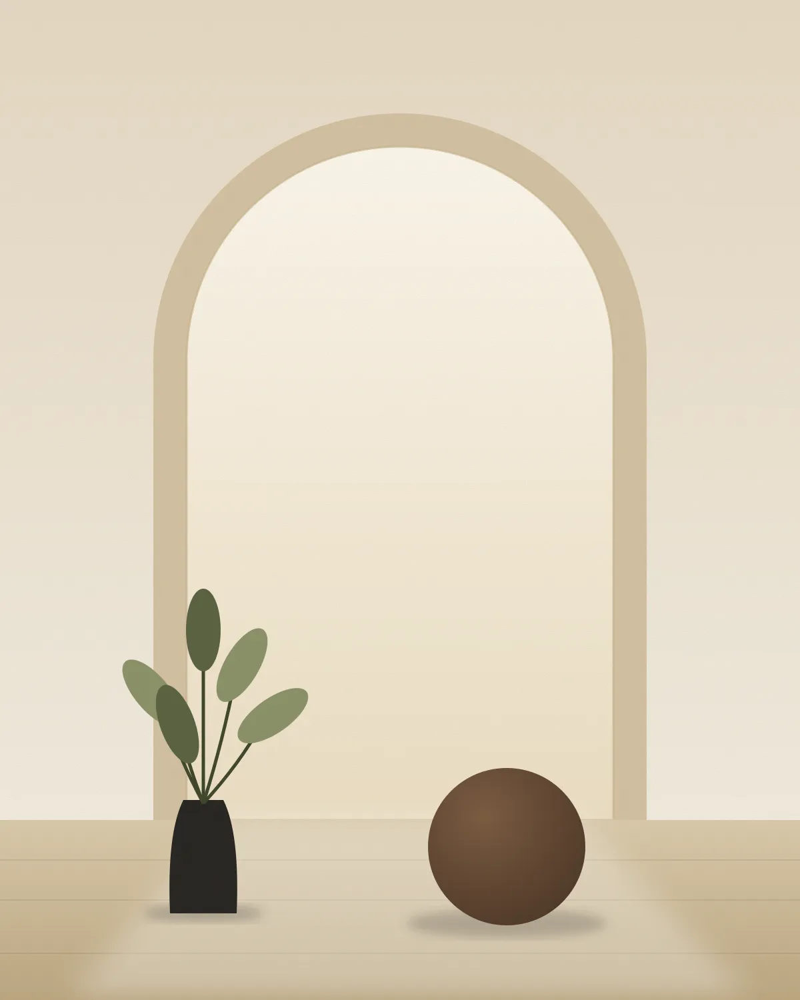
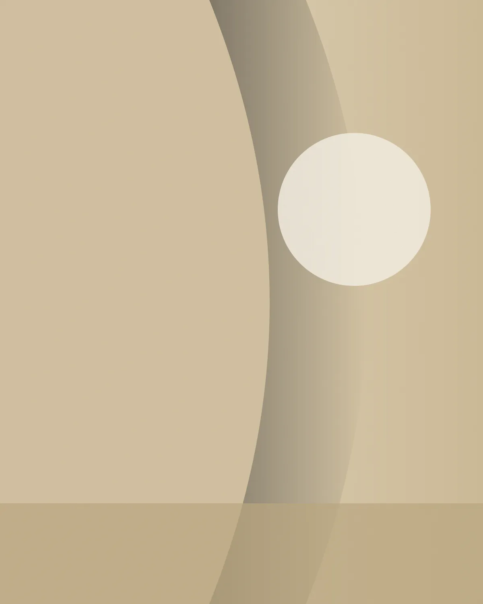
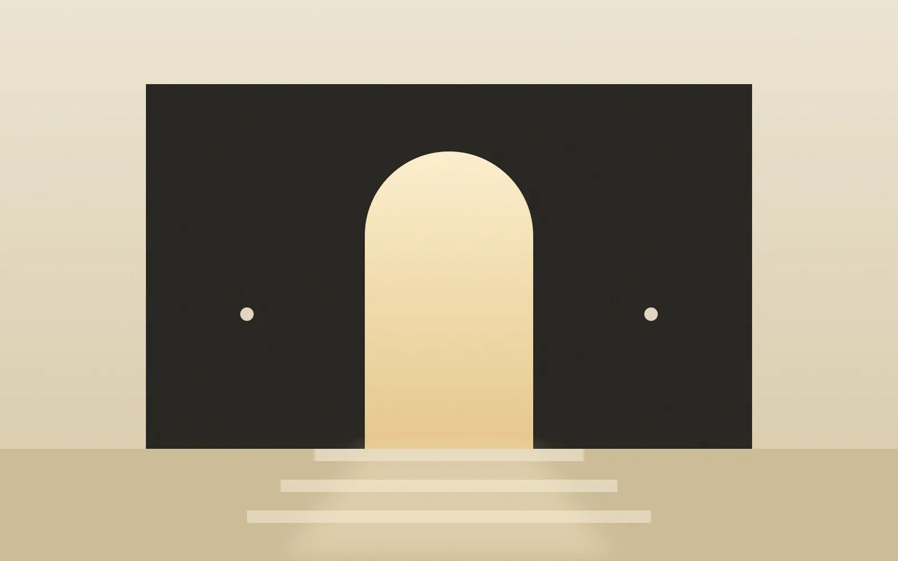

Tempo de consulta
Cada horário é pensado para conversar e examinar sem correria. Ninguém sai sem entender o que foi visto e o que vem a seguir.
Odontologia · Clínica Orbe
Ortodontia, implantes, estética, clareamento, endodontia e clínica geral, reunidos em um só lugar e conduzidos por um plano que você entende.

Uma clínica  desenhada com materiais naturais, pouca pressa e a convicção de que explicar bem faz parte do tratamento.
desenhada com materiais naturais, pouca pressa e a convicção de que explicar bem faz parte do tratamento.
Aqui, a arquitetura, a agenda e o atendimento seguem a mesma lógica: reduzir o ruído para que você possa decidir com tranquilidade.


O ambiente
O projeto da clínica parte de poucos materiais e de curvas suaves. A ideia é que o espaço desacelere quem chega, e não que anuncie tecnologia.
Ver os ambientes
Filosofia de atendimento
Quatro princípios organizam como a equipe trabalha.
Cada horário é pensado para conversar e examinar sem correria. Ninguém sai sem entender o que foi visto e o que vem a seguir.
Antes de qualquer intervenção, o plano é explicado: opções, custos, prazos estimados e manutenção.
Quando uma alternativa conservadora resolve, ela vem primeiro. Intervenções maiores entram quando fazem sentido clínico.
Materiais naturais, luz suave e pouco ruído visual. A arquitetura faz parte do cuidado.

Envie uma mensagem com a especialidade de interesse. A equipe responde para combinar o melhor horário.